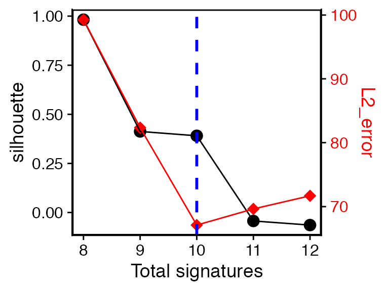
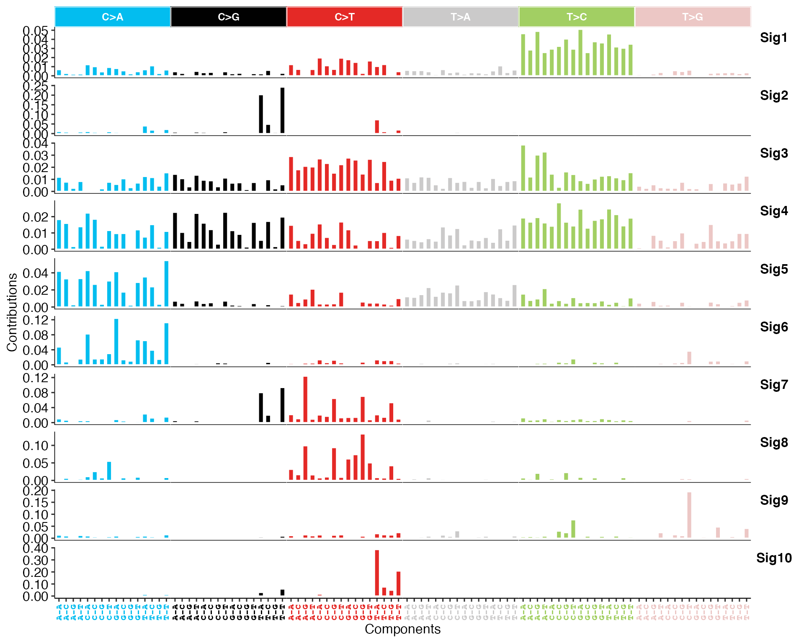
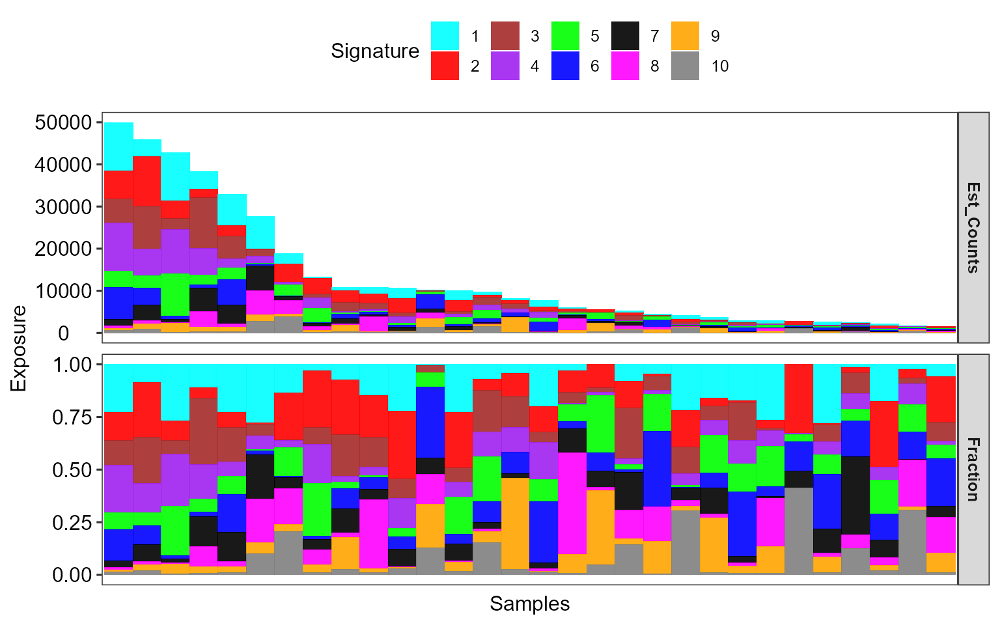
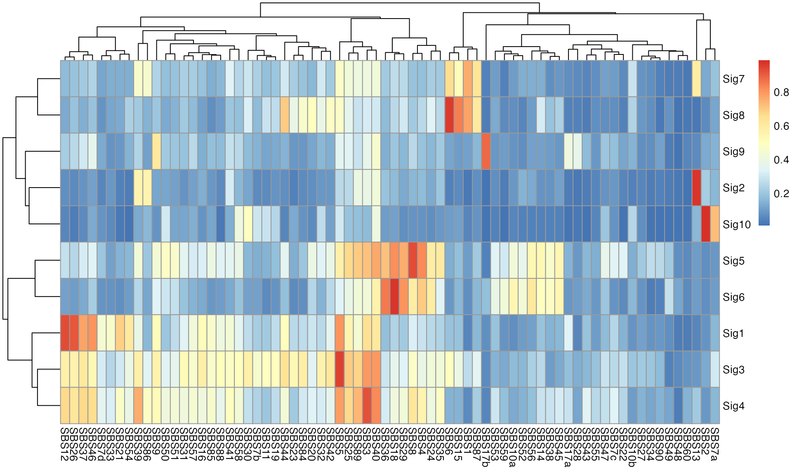

vignettes/sigminer.Rmd
sigminer.RmdAssume you have already gotten a catalog matrix (sample-by-component) like below:
library(sigminer)
#> sigminer version 1.2.4, run hello() to see usage and citation.
data("simulated_catalogs")
mat <- t(simulated_catalogs$set1)
mat[1:5, 1:5]
#> A[C>A]A A[C>A]C A[C>A]G A[C>A]T C[C>A]A
#> Sample_1 911 761 88 744 883
#> Sample_2 195 175 19 174 225
#> Sample_3 95 51 12 55 142
#> Sample_4 131 71 14 77 170
#> Sample_5 33 10 2 14 55Extract signatures with:
# Here I reduce the values for n_bootstrap and n_nmf_run for reducing the run time. In practice, you
# should keep default or increase the values for better estimation. The input data here is simulated
# from 10 mutational signatures
e1 <- bp_extract_signatures(mat, range = 8:12, n_bootstrap = 5, n_nmf_run = 10)Check which signature number is proper:
bp_show_survey2(e1, highlight = 10)
#> Variables can be used: signature_number, silhouette, sample_cosine_distance, L1_error, L2_error, exposure_positive_correlation, signature_similarity_within_cluster, signature_similarity_across_cluster, silhouette_sample
Get the 10 signatures:
obj <- bp_get_sig_obj(e1, 10)Show signature profile:
show_sig_profile(obj, mode = "SBS", style = "cosmic") Show signature activity (a.k.a. exposure) profile:
show_sig_exposure(obj, rm_space = TRUE)
Calculate the similarity to COSMIC reference signatures:
sim <- get_sig_similarity(obj, sig_db = "SBS")
#> -Comparing against COSMIC signatures
#> ------------------------------------
#> --Found Sig1 most similar to SBS12
#> Aetiology: Unknown [similarity: 0.932]
#> --Found Sig2 most similar to SBS13
#> Aetiology: Activity of APOBEC family of cytidine deaminases [similarity: 0.97]
#> --Found Sig3 most similar to SBS5
#> Aetiology: Unknown (clock-like signature) [similarity: 0.95]
#> --Found Sig4 most similar to SBS3
#> Aetiology: Defective homologous recombination DNA damage repair [similarity: 0.927]
#> --Found Sig5 most similar to SBS8
#> Aetiology: Unknown [similarity: 0.934]
#> --Found Sig6 most similar to SBS18
#> Aetiology: Damage by reactive oxygen species [similarity: 0.975]
#> --Found Sig7 most similar to SBS1
#> Aetiology: Spontaneous deamination of 5-methylcytosine (clock-like signature) [similarity: 0.76]
#> --Found Sig8 most similar to SBS6
#> Aetiology: Defective DNA mismatch repair [similarity: 0.957]
#> --Found Sig9 most similar to SBS17b
#> Aetiology: Unknown [similarity: 0.888]
#> --Found Sig10 most similar to SBS2
#> Aetiology: Activity of APOBEC family of cytidine deaminases [similarity: 0.986]
#> ------------------------------------
#> Return result invisiblely.
Please go to https://shixiangwang.github.io/sigminer/reference/index.html for well organized functions and documentation.
Please go to https://shixiangwang.github.io/sigminer-doc/ or https://shixiangwang.gitee.io/sigminer-doc/ (for Chinese readers) for full vignette.